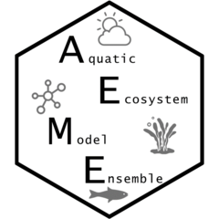

Load model configuration to the aeme object
Source:R/load_configuration.R
load_configuration.RdLoad model configuration to the aeme object
Usage
load_configuration(
aeme,
model,
path = ".",
model_controls = NULL,
use_bgc = FALSE,
ext_elev = 0,
calc_wbal = TRUE,
wb_method = 2,
calc_wlev = TRUE,
use_aeme = FALSE,
coeffs = NULL,
hum_type = 3,
est_swr_hr = TRUE
)Arguments
- aeme
Aeme object.
- model
character vector; models to use. One or more of
"dy_cd","glm_aed","gotm_wet". Defaults to all models if not found inaeme.- path
character; directory where input files are located. Defaults to the path stored in
aeme, or the current working directory if not set.- model_controls
data.frame; model configuration, typically loaded via
get_model_controls().- use_bgc
logical; enable the biogeochemical model. Default:
FALSE.- ext_elev
numeric; elevation (m) to extend the hypsograph to. Default:
0.- calc_wbal
logical; calculate water balance. Default:
TRUE.- wb_method
integer; water balance method. One of:
1— no inflows or outflows2— outflows calculated (default)3— unexplained storage changes treated as effective inflows/outflows
- calc_wlev
logical; calculate water level. Default:
TRUE.- use_aeme
logical; use the
aemeobject to generate model configuration files. Default:FALSE.- coeffs
numeric vector of length 2; coefficients for estimating surface water temperature when calculating evaporation. If water temperature observations are present in
aeme, a linear model is fitted against air temperature. Otherwise defaults to \(T_{water} = 5 + 0.75 \times T_{air}\) (Stefan & Preud'homme, 1993, doi:10.1111/j.1752-1688.1993.tb01502.x ).- hum_type
integer; humidity input type for GOTM. One of:
1— relative humidity (%)2— wet-bulb temperature3— dew point temperature (default)4— specific humidity (kg/kg)
- est_swr_hr
logical; estimate hourly shortwave radiation from daily values. Default:
TRUE.